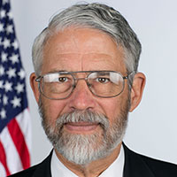

{kind=link}
{kind=link}
EIA Energy Conference
2016 EIA Energy Conference Presentations
More than 1,000 leaders from industry, government, and academia turned out for EIA's 2016 Energy Conference, July 11 and 12 at the Washington Hilton in Washington, DC to discuss current and future challenges facing domestic and international energy markets and policymakers.
|  | ||||
| John Holdren Assistant to the President for Science and Technology and Director, White House Office of Science and Technology Policy |
Gregory Goff Chairman, President, and CEO Tesoro Corporation |
Dan Gardner Co-author of Superforecasting: The Art and Science of Prediction and Advisor to the Prime Minister of Canada |
Steve Kean President and CEO Kinder Morgan, Inc. |
Jeff Flake U.S. Senator, Arizona U.S. Senate Committee on Energy and Natural Resources |
To be added to the mailing list to receive information about the 2017 EIA Energy Conference, email us at conference@eia.gov.
Plenary Session
- Adam Sieminski, Administrator, U.S. Energy Information Administration
- John P. Holdren, Assistant to the President for Science and Technology and Director, White House Office of Science and Technology Policy
- Gregory J. Goff, Chairman, President, and CEO, Tesoro Corporation
Keynote remarks
Clean Power Plan: EIA, EPA, and state and regional perspectives
- Howard Gruenspecht, U.S. Energy Information Administration - Moderator
- Joseph Goffman, Environmental Protection Agency
Clean Power Plan: EIA, EPA, and State and Regional Perspectives - Michael Tubman, Center for Climate and Energy Solutions
Clean Power Plan: State and Regional Perspectives - Thaddeus Huetteman, U.S. Energy Information Administration
Impact of the Clean Power Plan: Annual Energy Outlook 2016 Reference/Alternative Cases
Oil demand and transportation: Transportation sector developments affecting oil demand and price response
- Jim Turnure, U.S. Energy Information Administration - Moderator
- G. Mustafa Mohatarem, General Motors
This Time It's Different; Really? - John Maples, U.S. Energy Information Administration
Examining Future Global Transportation Energy Demand - Chris Atkinson, Advanced Research Projects Agency-Energy
The Automotive Industry to 2025 (and beyond)
Lunch Keynote
- Dan Gardner, Co-author of Superforecasting: The Art and Science of Prediction and Advisor to the Prime Minister of Canada
Climate—next steps: Perspectives from the United States, Europe, and China
- Perry Lindstrom, U.S. Energy Information Administration - Moderator
- Sarah Ladislaw, Center for Strategic and International Studies
Next Steps on Climate: United States - Jacob Werksman, European Commission
EU Climate Policy - Jiang Kejun, Energy Research Institute, China
China's Low Carbon and Energy Transition - Peaking CO2 emission in 2020 to 2022 – We NEED Rapid Transition
Oil supply: The role of technology advances and other factors driving the current and future supply situation
- John Staub, U.S. Energy Information Administration - Moderator
- Lars Eirik Nicolaisen, Rystad Energy
- Jamie Webster, Columbia Center for Global Energy Policy
Shale: Swing Supplier or Bridge Fuel? - Michael Lynch, Strategic Energy & Economic Research Inc.
Oil Supply and Technology
Measuring energy efficiency: Opportunities from standardization and common metrics
- Stacy Angel, U.S. Energy Information Administration - Moderator
Measuring energy efficiency: Opportunities from standardization and common metrics - Nikolaas Dietsch, EPA
EM&V Status and Opportunities: A Federal Perspective - Elizabeth Titus, Northeast Energy Efficiency Partnerships
Standardization of Energy Efficiency Information: The Northeast Regional Perspective - Allison Porter, Cushman & Wakefield
The World's Best Coffee and Other Lies: Why Energy Metrics Matter
LNG markets: Implications of a low energy price environment for demand and U.S. exports
- Angelina LaRose, U.S. Energy Information Administration - Moderator
- Ernie Megginson, Megginson & Associates, Inc.
An Exporter's Perspective - Nelly Mikhaiel, Nexant
"The Australian Perspective" - Keo Lukefahr, PetroChina International (America), Inc.
LNG: Long-Term Competitiveness in Asian Markets
Professional development: Careers in EIA
- Jeffery Anoka, U.S. Energy Information Administration - Moderator
- Hannah Breul, U.S. Energy Information Administration
- Jherika Curry, U.S. Energy Information Administration
- Marcelia Freeman, EIG Global Energy Partners
- Slade Johnson, U.S. Energy Information Administration
- James Koehler, Georgetown University
- Eric Smith, Tulane University Energy Institute
Plenary Session
- Steve Kean, President and CEO, Kinder Morgan, Inc.
Keynote remarks - Jeff Flake, U.S. Senator, Arizona
Renewable electricity: State-level issues and perspectives
- Stan Kaplan, U.S. Energy Information Administration - Moderator
- John Williams, New York State Energy Research and Development Authority
Renewable Electricity: State-level Issues and Perspectives - Thomas Gorak, Hawaii Public Utilities Commission
Advancing Renewables: Lessons Learned in Hawaii (So Far)
- Sean Gallagher, Solar Energy Industries Association
Renewable electricity: State-level Issues and Perspectives
Oil and natural gas: State-level issues and perspectives
- Shirley Neff, U.S. Energy Information Administration - Moderator
- Scott Kell, Ohio Department of Natural Resources
Utica Shale Update - Lori Wrotenbery, The Railroad Commission of Texas
Oil and natural gas: state-level issues and perspectives - Mine Yücel, Federal Reserve Bank of Dallas
From Boom to Gloom: Energy States After the Oil Bust
Industrial energy demand and efficiency: Secondary processing and waste fuel use in heavy industry
- Bob Adler, U.S. Energy Information Administration - Moderator
- Kelly Perl, U.S. Energy Information Administration
New technical choice models in the Industrial Demand Module, with steel and paper results - Francesco Memoli, Tenova Metals
The 3E model for a sustainable steel industry - Laura Thompson, Sappi North America
Industrial energy demand and efficiency: Secondary processing and waste fuel use in the pulp and paper industry
World coal markets: The changing global landscape
- Greg Adams, U.S. Energy Information Administration - Moderator
- Xizhou Zhou, IHS Energy
China's Coal Market: Did peak demand come and go? - Jitendra Roychoudhury, King Abdullah Petroleum Studies and Research Center
Current Status of Coal in India - Sylvie Cornot-Gandolphe, SCG Consulting
Southeast Asia Coal Demand and Imports
Renewable energy and the transmission grid: Integrating renewable energy capacity into electric system operations
- Sara Hoff, U.S. Energy Information Administration - Moderator
- Bryan Hannegan, National Renewable Energy Laboratory
Lessons from ERGIS: Integrating Renewables into the Grid - Robin Bedilion, Electric Power Research Institute
The Need for Flexible Generation in the Bulk Power System - Andrew Gohn, American Wind Energy Association
AWEA presentation
Information technology and the energy industry: How the application of information technology is driving change in the energy industry
- Steve Harvey, U.S. Energy Information Administration - Moderator
- James W. Vick, Southwestern Energy Company
Southwestern Energy presentation - Mark Rothleder, California Independent System Operator
Information Technology and Energy Industry
Previous EIA Energy Conferences